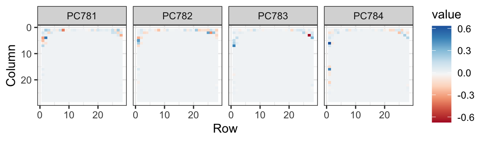

21 Dimension reduction
A typical machine learning challenge will include a large number of predictors, which makes visualization somewhat challenging. We have shown methods for visualizing univariate and paired data, but plots that reveal relationships between many variables are more complicated in higher dimensions. For example, to compare each of the 784 features in our predicting digits example, we would have to create, for example, 306,936 scatterplots. Creating one single scatter-plot of the data is impossible due to the high dimensionality.
Here we describe powerful techniques useful for exploratory data analysis, among other things, generally referred to as dimension reduction. The general idea is to reduce the dimension of the dataset while preserving important characteristics, such as the distance between features or observations. With fewer dimensions, visualization then becomes more feasible. The technique behind it all, the singular value decomposition, is also useful in other contexts. Principal component analysis (PCA) is the approach we will be showing. We will motivate the ideas behind with a simple example.
21.1 Motivation: preserving distance
We consider an example with twin heights. Some pairs are adults, the others are children. Here we simulate 100 two-dimensional points that represent the number of standard deviations each individual is from the mean height. Each point is a pair of twins. We use the mvrnorm function from the MASS package to simulate bivariate normal data.
A scatterplot quickly reveals that the correlation is high and that there are two groups of twins, the adults (upper right points) and the children (lower left points):

Our features are \(N\) two-dimensional points, the two heights, and, for illustrative purposes, we will act as if visualizing two dimensions is too challenging: we want to explore the data through a histogram of a one-dimensional variable. We therefore want to reduce the dimensions from two to one, but still be able to understand important characteristics of the data, for example that the observations cluster into two groups: adults and children. To show the ideas presented here are generally useful, we will standardize the data so that observations are in standard units rather than inches:
x <- scale(x)In the figure above we show the distance between observation 1 and 2 (blue), and observation 1 and 51 (red). Note that the blue line is shorter, which implies 1 and 2 are closer.
We can compute these distances using dist:
This distance is based on two dimensions and we need a distance approximation based on just one.
Let’s start with the naive approach of simply removing one of the two dimensions. Let’s compare the actual distances to the distance computed with just the first dimension:
z <- x[,1]To make the distances comparable, we divide the sum of squares by the number of dimensions. So for the two dimensional case we have
\[\sqrt{ \frac{1}{2} \sum_{j=1}^2 (x_{1,j}-x_{2,j})^2 },\]
so we divide the distance by \(\sqrt{2}\):

Based on the plot, this one number summary does ok at preserving distances, but, can we pick a one-dimensional summary that makes this one-number approximation even better?
If we look back at the scatterplot and visualize a line between any pair of points, the length of this line is the distance between the two points. These lines tend to go along the direction of the diagonal. We will learn that we can rotate the points in a way that preserve the distance between points, while increasing the variability in one dimension and reducing it on the other. By doing this, we keep more of the information about distances in the first dimension. In the next section we describe a mathematical approach the permits us to find rotations that preserve distance between points. We can then find the rotation that maximizes the variability in the first dimension.
21.2 Rotations
Any two-dimensional point \((X_1, X_2)\) can be written as the base and height of a triangle with a hypotenuse going from \((0,0)\) to \((X_1, X_2)\):
\[ x_1 = r \cos\phi, \,\, x_2 = r \sin\phi \]
with \(r\) the length of the hypothenus and \(\phi\) the angel between the hypotenuse and the x-axis.
We can rotate the point \((x_1, x_2)\) around a circle with center \((0,0)\) and radius \(r\) by an angle \(\theta\) by changing the angle in the previous equation to \(\phi + \theta\):
\[ z_1 = r \cos(\phi+ \theta), \,\, z_2 = r \sin(\phi + \theta) \]

We can use trigonometric identities to rewrite \((z_1, z_2)\) in the following way:
\[ \begin{align} z_1 = r \cos(\phi + \theta) = r \cos \phi \cos\theta - r \sin\phi \sin\theta = x_1 \cos(\theta) - x_2 \sin(\theta)\\ z_2 = r \sin(\phi + \theta) = r \cos\phi \sin\theta + r \sin\phi \cos\theta = x_1 \sin(\theta) + x_2 \cos(\theta) \end{align} \]
Now we can rotate each point in the dataset by simply applying the formula above to each pair \((x_{i,1}, x_{i,2})\). Here is what the twin standardized heights look like after rotating each point by \(-45\) degrees:

Note that while the variability of \(x_1\) and \(x_2\) are similar, the variability of \(z_1\) is much larger than the variability of \(z_2\). Also note that the distances between points appear to be preserved. In the next sections, we show, mathematically, that this in fact the case.
21.3 Linear transformations
Note that each row of \(\mathbf{X}\) was transformed using a linear transformation. For any row \(i\), the first entry was:
\[z_{i,1} = a_{11} x_{i,1} + a_{21} x_{i,2}\]
with \(a_{11} = \cos\theta\) and \(a_{21} = -\sin\theta\).
The second entry was also a linear transformation:
\[z_{i,2} = a_{12} x_{i,1} + a_{22} x_{i,2}\]
with \(a_{12} = \sin\theta\) and \(a_{22} = \cos\theta\).
We can also use linear transformations to get \(X\) back from \(Z\). Solving the system of two linear equations gives us:
\[x_{i,1} = b_{1,1} z_{i,1} + b_{2,1} z_{i,2}\]
with \(b_{1,2} = \cos\theta\) and \(b_{2,1} = \sin\theta\) and
\[x_{i,2} = b_{2,1} z_{i,1} + b_{2,2} z_{i,2}\]
with \(b_{2,1} = -\sin\theta\) and \(b_{1,2} = \cos\theta\).
Using linear algebra, we can write the operation we just performed like this:
\[ \begin{pmatrix} z_1&z_2 \end{pmatrix} = \begin{pmatrix} x_1&x_2 \end{pmatrix} \begin{pmatrix} a_{11}&a_{12}\\ a_{21}&a_{22} \end{pmatrix} \]
An advantage of using linear algebra is that we can write the transformation for the entire dataset by representing it as a \(N \times 2\) matrix \(X\), with each row holding the two values for a pair of twins, and the rotation as a linear transformation of \(X\):
\[ \mathbf{Z} = \mathbf{X} \mathbf{A} \mbox{ with } \mathbf{A} = \, \begin{pmatrix} a_{11}&a_{12}\\ a_{21}&a_{22} \end{pmatrix}. \]
This transformation results in an \(N \times 2\) matrix, denoted here with \(Z\), with the rotated points in each row. Another advantage of linear algebra is that we can rotate back by simply multiplying \(Z\) by the inverse matrix: \(\mathbf{Z} \mathbf{A}^{-1} = \mathbf{X} \mathbf{A} \mathbf{A}^{-1} = \mathbf{X}\). This implies that all the information in \(\mathbf{X}\) is included in the rotation \(\mathbf{Z}\), and it can be retrieved via a linear transformation.
These derivations imply that we can use the following code to rotate the data by any angle \(\theta\):
We can use this to confirm that for any rotation the distances are preserved. Here are two examples:
The next section explains why this happens.
21.4 Orthogonal transformations
Recall that the distance between two points, say rows \(h\) and \(i\) of the transformation \(\mathbf{Z}\), can be written like this:
\[ ||\mathbf{z}^\top_h - \mathbf{z}^\top_i|| = (\mathbf{z}_h - \mathbf{z}_i)(\mathbf{z}^\top_h - \mathbf{z}^\top_i) \] with \(\mathbf{z}_h\) and \(\mathbf{z}_i\) the \(h\)-th and \(i\)-th \(1 \times p\) rows, with \(p=2\) in our specific example. Using linear algebra, we can rewrite this quantity as
\[ ||\mathbf{z}^\top_h - \mathbf{z}^\top_i||^2 = ||\mathbf{A}^\top\mathbf{x}^\top_h - \mathbf{A}^\top\mathbf{x}^\top_i||^2 = (\mathbf{x}_h - \mathbf{x}_i) \mathbf{A} \mathbf{A}^\top (\mathbf{x}^\top_h - \mathbf{x}^\top_i) \]
Note that if \(\mathbf{A} \mathbf{A}^\top = \mathbf{I}\) then the distance between the \(h\)th and \(i\)th rows is the same for the original and transformed data. We to transformation with the property \(\mathbf{A} \mathbf{A}^\top = \mathbf{I}\) as orthogonal transformations and they are guaranteed to preserves the distance between any two points.
Notice that \(\mathbf{A}\) being orthogonal also guarantees that the total sum of squares of any row in \(\mathbf\) is preserved after the transformation:
\[ ||\mathbf{z}^\top_i||^2 = ||\mathbf{x}^\top_i\mathbf{A}||^2 = \mathbf{x}_i \mathbf{A}\mathbf{A}^\top \mathbf{x}^\top_i = \mathbf{x}_i \mathbf{x}^\top_i = ||\mathbf{x}^\top_i||^2 \]
Our transformation has this property:
We can confirm this by computing the total variation for x and z:
This can be interpreted as consequence of the fact that orthogonal transformation guarantee that all the information is preserved.
21.5 Principal Component Analysis (PCA)
Now how does this all relate to our goal of finding a one-dimensional summary that approximates distance between points?
Note that in our original data the variability of the two dimensions is the same:
colSums(x^2)
#> [1] 99 99But after a rotations this is no longer true:
colSums(z^2)
#> [1] 194.99 3.01With z, the proportion of the variability included in the first dimension is much higher. We can search for the rotation that maximizes the proportion of the variability included in the first dimension:
#> ── Attaching core tidyverse packages ──────────────── tidyverse 2.0.0 ──
#> ✔ dplyr 1.1.1 ✔ readr 2.1.4
#> ✔ forcats 1.0.0 ✔ stringr 1.5.0
#> ✔ lubridate 1.9.2 ✔ tibble 3.2.1
#> ✔ purrr 1.0.1 ✔ tidyr 1.3.0
#> ── Conflicts ────────────────────────────────── tidyverse_conflicts() ──
#> ✖ dplyr::filter() masks stats::filter()
#> ✖ dplyr::lag() masks stats::lag()
#> ✖ dplyr::select() masks MASS::select()
#> ℹ Use the conflicted package (<http://conflicted.r-lib.org/>) to force all conflicts to become errors
We see that the variability included in the first dimension is maximized at about -45 degrees. Becuase almost all the variation is explained by this first dimension, with this particular rotation the distance between points in \(X\) can be very well approximated by just the first dimension of \(Z\), much better than with the first dimension of \(X\):

We also notice that the two groups, adults and children, can be clearly observed with the one number summary:
hist(z[,1], nclass = 15)
Below, we learn that the rotation that maximizes the standard deviation of the first dimention z[,1] gives us the first principal component of the matrix x.

In general, dimension reduction can be described as applying a rotation \(A\) to a matrix with many columns \(X\) that moves the information contained in \(\mathbf{X}\) to the first few columns of \(\mathbf{Z}=\mathbf{X}\mathbf{A}\). Then keeping just these few informative columns, reduces the dimension of the vectors contained in the rows. In our simplistic example we reduced the dimensions from 2 to 1. But the ideas extend to higher dimensions.
In general, the first principal component (PC) of a matrix \(\mathbf{X}\) is the linear orthogonal transformation that maximizes the variability of the first dimension. The function prcomp finds this transformation:
pca <- prcomp(x)
pca$rotation
#> PC1 PC2
#> [1,] -0.707 0.707
#> [2,] -0.707 -0.707Note that the first PC is almost the same as that provided by the \(\cos(-45^{\circ}), \sin(-45^{\circ})\) we used earlier (except perhaps for a sign change that is arbitrary).
The function prcomp returns the rotation needed to transform \(\mathbf{X}\) so that the variability of the columns is decreasing from most variable to least (accessed with $rotation) as well as the resulting new matrix (accessed with $x). By default the columns of \(\mathbf{X}\) are first centered (to change this change the center argument to FALSE).
So, using the matrix multiplication shown above, we have that the following are the same (demonstrated by a difference between elements of essentially zero):
The rotation is orthogonal which means that the inverse is its transpose. So we also have that these two are identical:
We can visualize these to see how the first component summarizes the data. In the plot below red represents high values and blue negative values (later, in Section Section 23.1), we learn why we call these weights and patterns:

It turns out that we can find this linear transformation not just for two dimensions but for matrices of any dimension \(p\). For a multidimensional matrix with \(p\) columns, we can find a transformation that preserves distance between rows, but with the variance of the columns in decreasing order. The second column is the second principal component, the third column is the third principal component, and so on. As in our example, if after a certain number of columns, say \(k\), the variances of the columns of \(\mathbf{Z}_j\), \(j>k\) are very small, it means these dimensions have little to contribute to the distance and we can approximate distance between any two points with just \(k\) dimensions. If \(k\) is much smaller than \(p\), then we can achieve a very efficient summary of our data.
21.6 Iris example
The iris data is a widely used example in data analysis courses. It includes four botanical measurements related to three flower species:
names(iris)
#> [1] "Sepal.Length" "Sepal.Width" "Petal.Length" "Petal.Width"
#> [5] "Species"If you print iris$Species you will see that the data is ordered by the species.
Let’s compute the distance between each observation. You can clearly see the three species with one species very different from the other two:

Our predictors here have four dimensions, but three are very correlated:
cor(x)
#> Sepal.Length Sepal.Width Petal.Length Petal.Width
#> Sepal.Length 1.000 -0.118 0.872 0.818
#> Sepal.Width -0.118 1.000 -0.428 -0.366
#> Petal.Length 0.872 -0.428 1.000 0.963
#> Petal.Width 0.818 -0.366 0.963 1.000If we apply PCA, we should be able to approximate this distance with just two dimensions, compressing the highly correlated dimensions. Using the summary function we can see the variability explained by each PC:
The first two dimensions account for 97% of the variability. Thus we should be able to approximate the distance very well with two dimensions. We can visualize the results of PCA:

And see that the first pattern is sepal length, petal length, and petal width (red) in one direction and sepal width (blue) in the other. The second pattern is the sepal length and petal width in one direction (blue) and petal length and petal width in the other (red). You can see from the weights that the first PC1 drives most of the variability and it clearly separates the first third of samples (setosa) from the second two thirds (versicolor and virginica). If you look at the second column of the weights, you notice that it somewhat separates versicolor (red) from virginica (blue).
We can see this better by plotting the first two PCs with color representing the species:
data.frame(pca$x[,1:2], Species = iris$Species) |>
ggplot(aes(PC1, PC2, fill = Species)) +
geom_point(cex = 3, pch = 21) +
coord_fixed(ratio = 1)
We see that the first two dimensions preserve the distance:
d_approx <- dist(pca$x[, 1:2])
plot(d, d_approx); abline(0, 1, color = "red")
#> Warning in int_abline(a = a, b = b, h = h, v = v, untf = untf, ...):
#> "color" is not a graphical parameter
This example is more realistic than the first artificial example we used, since we showed how we can visualize the data using two dimensions when the data was four-dimensional.
21.7 MNIST example
The written digits example has 784 features. Is there any room for data reduction? Can we create simple machine learning algorithms using fewer features?
Let’s load the data:
library(dslabs)
if (!exists("mnist")) mnist <- read_mnist()Because the pixels are so small, we expect pixels close to each other on the grid to be correlated, meaning that dimension reduction should be possible.
Let’s try PCA and explore the variance of the PCs. This will take a few seconds as it is a rather large matrix.
pc <- 1:ncol(mnist$test$images)
qplot(pc, pca$sdev)
#> Warning: `qplot()` was deprecated in ggplot2 3.4.0.
We can see that the first few PCs already explain a large percent of the variability:
summary(pca)$importance[,1:5]
#> PC1 PC2 PC3 PC4 PC5
#> Standard deviation 576.823 493.238 459.8993 429.8562 408.5668
#> Proportion of Variance 0.097 0.071 0.0617 0.0539 0.0487
#> Cumulative Proportion 0.097 0.168 0.2297 0.2836 0.3323And just by looking at the first two PCs we see information about the class. Here is a random sample of 2,000 digits:
data.frame(PC1 = pca$x[,1], PC2 = pca$x[,2],
label = factor(mnist$train$label)) |>
sample_n(2000) |>
ggplot(aes(PC1, PC2, fill = label)) +
geom_point(cex = 3, pch = 21)We can also see the linear combinations on the grid to get an idea of what is getting weighted:

The lower variance PCs appear related to unimportant variability in the corners:

21.8 Exercises
1. We want to explore the tissue_gene_expression predictors by plotting them.
dim(tissue_gene_expression$x)We want to get an idea of which observations are close to each other, but the predictors are 500-dimensional so plotting is difficult. Plot the first two principal components with color representing tissue type.
2. The predictors for each observation are measured on the same measurement device (a gene expression microarray) after an experimental procedure. A different device and procedure is used for each observation. This may introduce biases that affect all predictors for each observation in the same way. To explore the effect of this potential bias, for each observation, compute the average across all predictors and then plot this against the first PC with color representing tissue. Report the correlation.
3. We see an association with the first PC and the observation averages. Redo the PCA but only after removing the center.
4. For the first 10 PCs, make a boxplot showing the values for each tissue.
5. Plot the percent variance explained by PC number. Hint: use the summary function.